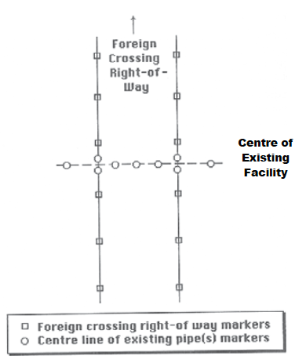

| 6.0 | FACILITY WORK PROCEDURE GUIDELINES | 49 |
| 6.1 | Locate Buried Facilities | 50 |
| 6.2 | Marking Facilities And Crossing Area | 50 |
| 6.3 | Install Test Leads | 52 |
| 6.4 | Inspect Facility And Coating | 53 |
| 6.5 | Wrap Pipe | 53 |
The facility owner is responsible for ensuring that buried facilities are accurately located. The owner may:
- Use his own staff to perform this task.
- Assign the task to a qualified representative.
The party locating the facility is responsible for marking the facility centre line (see Section 6.2).
| NOTE: | Locating should only be done by a competent and qualified individual. |
See the following figure for locations of markers.
The markers delineating the centre line of the existing facility should be planted by the party locating the facility. The markers should:
- Conform to the international color code for marking buried facilities.
- Be spaced not more than 5m apart or, where facilities follow a curve, spaced so that the curvature is clearly visible.
| PROPOSED EXCAVATION | White |
| SURVEY MARKINGS | Pink |
| ELECTRICAL | Red |
| ELECTRICAL | Red |
| GAS & OIL | Yellow |
| COMMUNICATION | Orange |
| WATER | Blue |
| SEWERS | Green |
| RECLAIMED WATER, IRRIGATION, And SLURRY LINES | Purple |
- Be marked and maintained with appropriate colored surveyor’s tape, firmly tied to 1.2m stakes. Pin flags and other marking tools are used by many locators.
- Extend at least 30 m beyond the proposed working area and be positioned directly above the centre line.
- Form a cross consisting of two stakes at the points where the existing facility centre line and the foreign crossing right of way intersect.
NOTE: Markers must be replaced immediately if they are inadvertently knocked over or removed. If the markers have been removed then the locate is no longer valid and must be relocated.
Markers should also be used to delineate the right of way of the existing facility. Care should be taken that these markers are not confused with the facility centre line markers. The facility owner should provide information about the right of way and specify who is responsible for placement of these markers.
Recommendations for the markers are:
- Temporary fencing
- Temporary barricades.
The markers delineating the right of way of the foreign crossing should be specified by the crossor. Recommendations for these markers are:
- Fluorescent pink surveyor’s tape tied firmly to 1.2m stakes.
- Markers spaced at intervals of not more than 50m apart along the length of the foreign right of way.
Installation may be done by the owner (preferred) or assigned by the owner to the crossor or the contractor. If work is assigned, test leads must be installed by qualified personnel as specified by the facility owner’s engineering department and checked by the facility inspector.
The facility owner must inspect the facility before backfilling takes place. The ground disturber must give at least 24 hours notice to the facility owner.
The inspector should:
- Inspect the full diameter of the facility, where possible, for scrapes, gouges, or other damage.
- Supervise any re-wrapping that may be necessary.
- Ensure that the installation of test leads meets the provision of Section 6.3.
- Measure and record the clearance between the existing facility and any foreign structure.
- Photograph and note condition of facility before backfill.
Protective coatings are required where it is necessary to isolate the external surface from its environment. The condition of the wrapping must be checked by the facility inspector prior to backfill.
The inspector should ensure that:
- Application of the coating suits the conditions.
- The new coating is compatible with the existing coating.
- The coating is compatible with the cathodic protection (if applicable).
- When applied, the coating is able to resist the underfilm migration of moisture.
- The coating is sufficiently ductile to resist cracking.
- The coating has sufficient mechanical strength to resist damage imposed by normal handling.
It is recommended that all exposed pipe be tested with a holiday detector set appropriately for the coating. If a detector is not used it is recommended that the existing line be double wrapped.